Tentang Saya
Halo! Saya Dita, mahasiswa D4 Promosi Kesehatan Poltekkes Kemenkes Bandung. Saya aktif di bidang edukasi kesehatan masyarakat, advokasi pemuda, media kreatif, dan gerakan sosial. Berpengalaman dalam organisasi, menginisiasi program pemberdayaan masyarakat, hingga publik berbicara (public speaking) dan seni kreatif.
Pengalaman & Jurnal Kegiatan
Bertanggung jawab dalam merancang dan memproduksi media komunikasi visual seperti poster dan konten edukasi untuk publikasi Instagram HIMA.

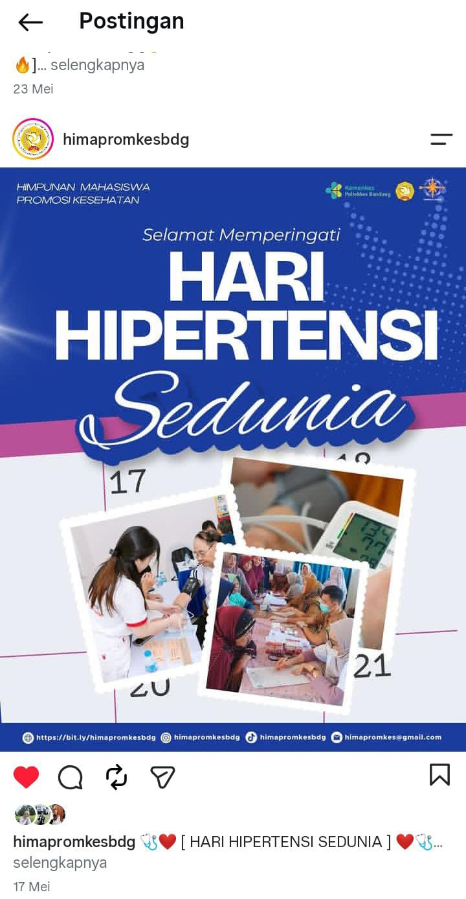
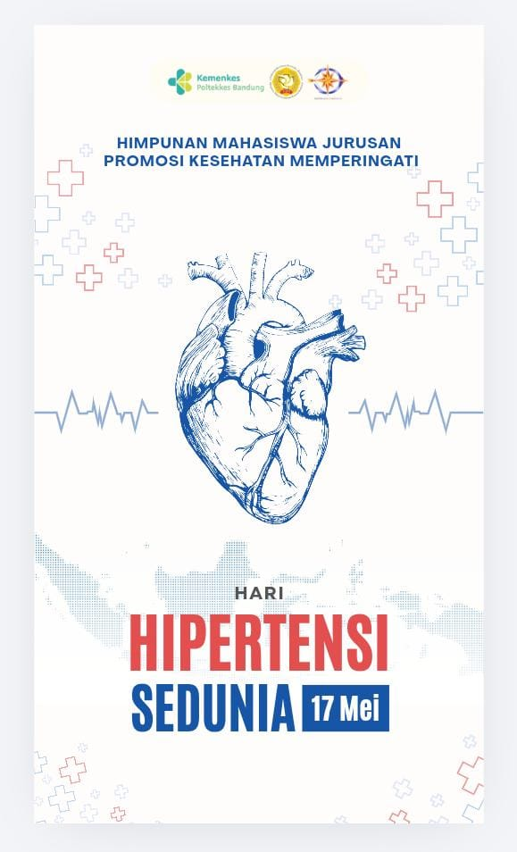
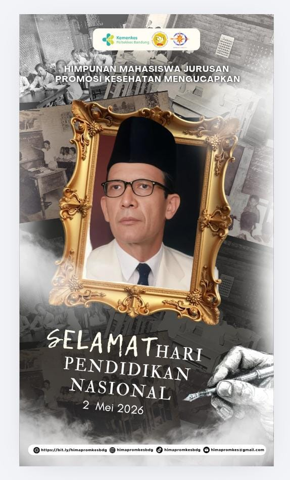
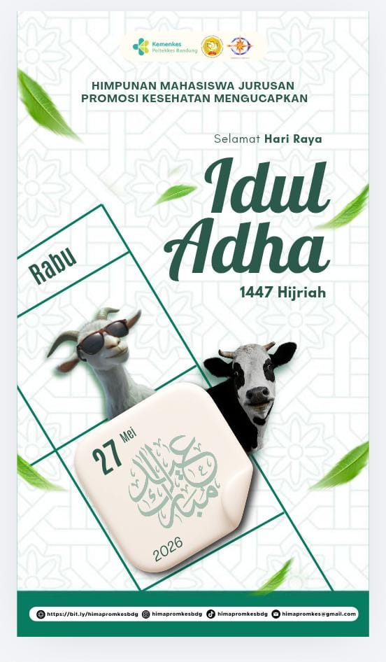
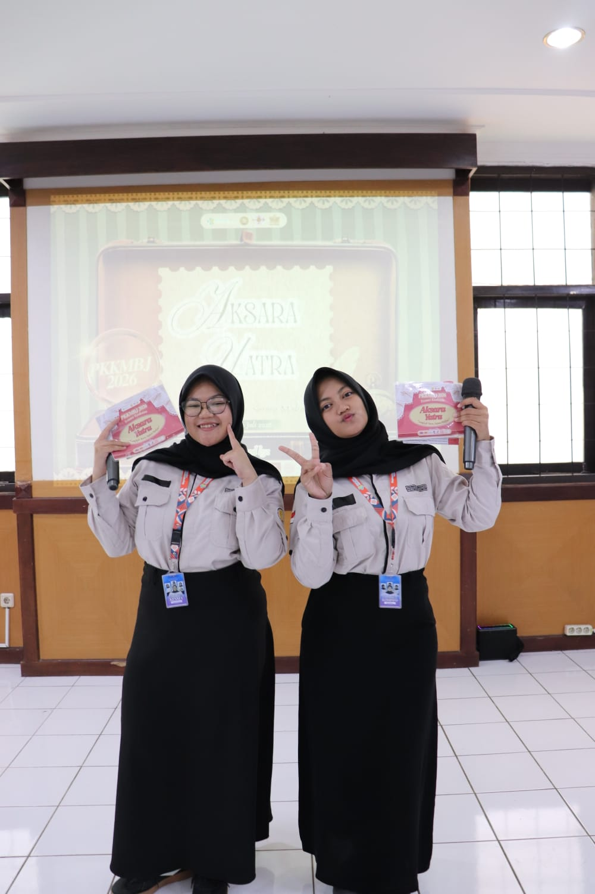
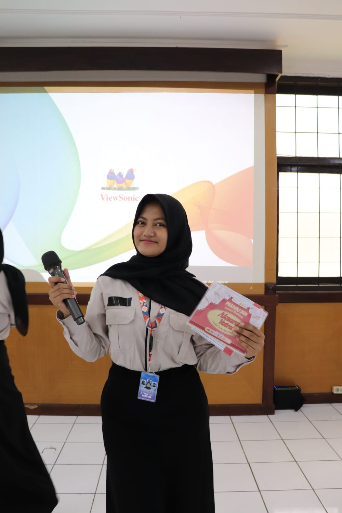
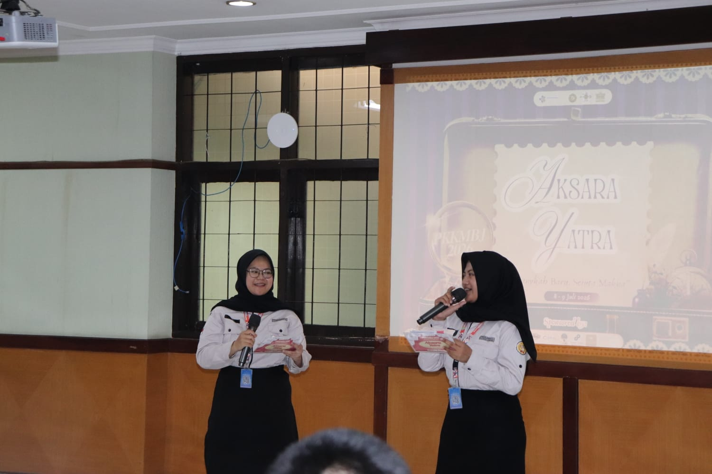
Aktif berkeliling sekolah untuk edukasi remaja, pendampingan mental anak-anak penderita kanker & thalasemia di rumah sakit, serta menginspirasi lewat konten edukatif di media sosial.
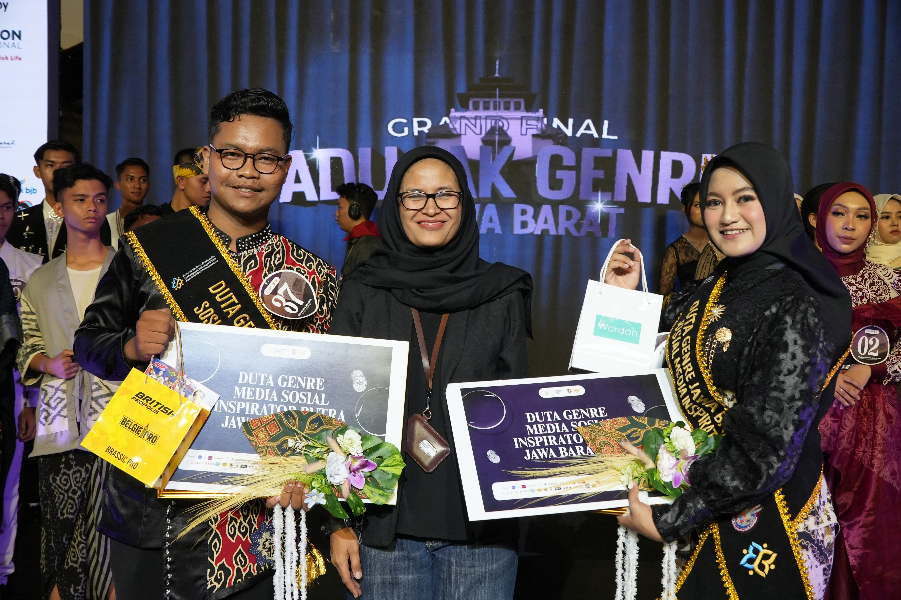
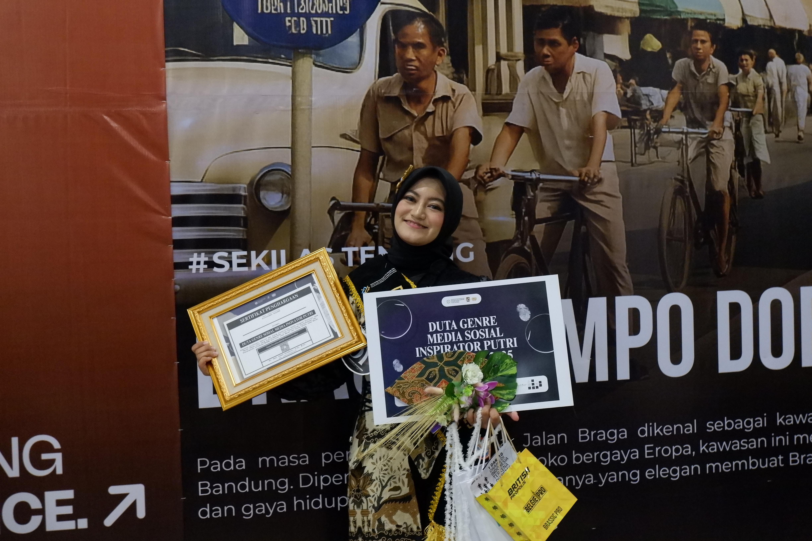
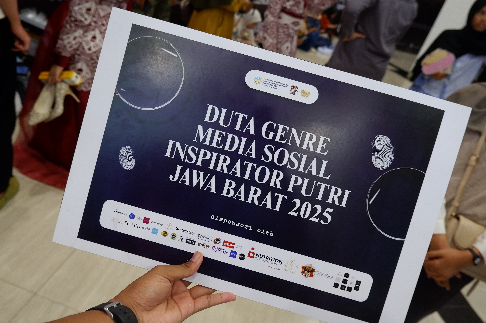
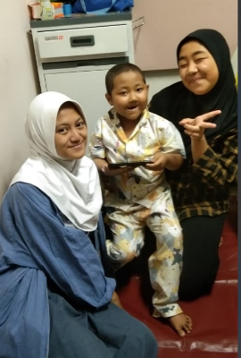
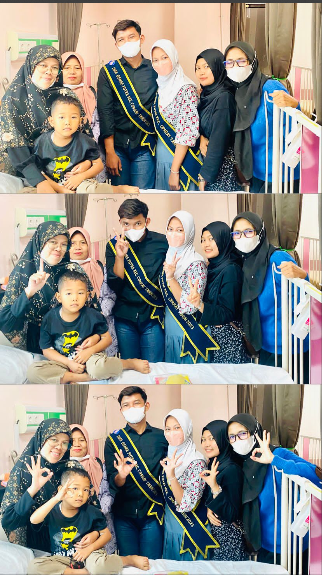
Membangun wadah berbagi cerita dan belajar untuk anak muda. Menciptakan BIM Card (Kartu Bantu Membaca) berbasis metode visual warna untuk literasi anak, serta bekerjasama dengan LPK untuk akses sekolah Paket A, B, C dan bahasa asing bagi anak jalanan.